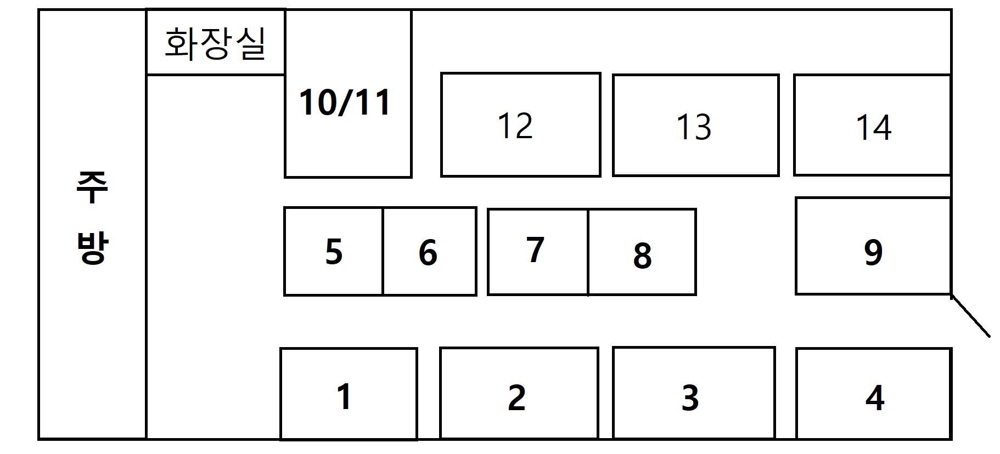
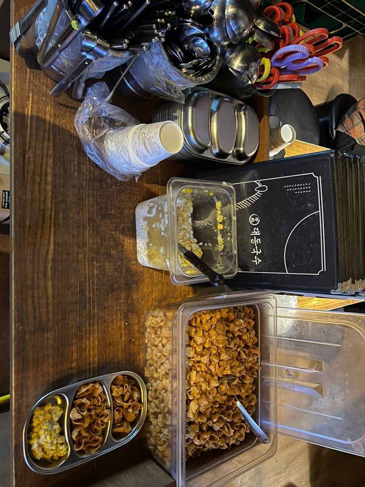
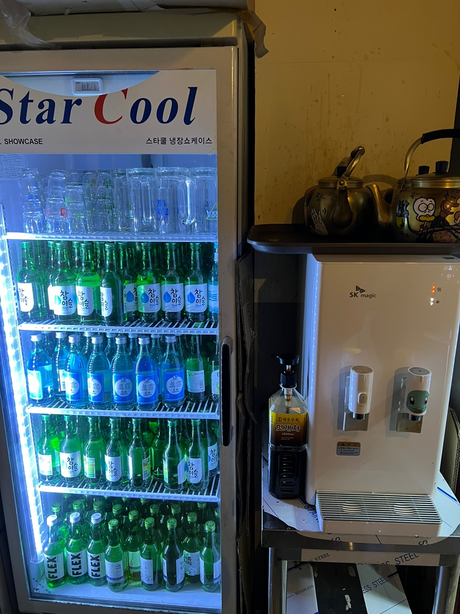
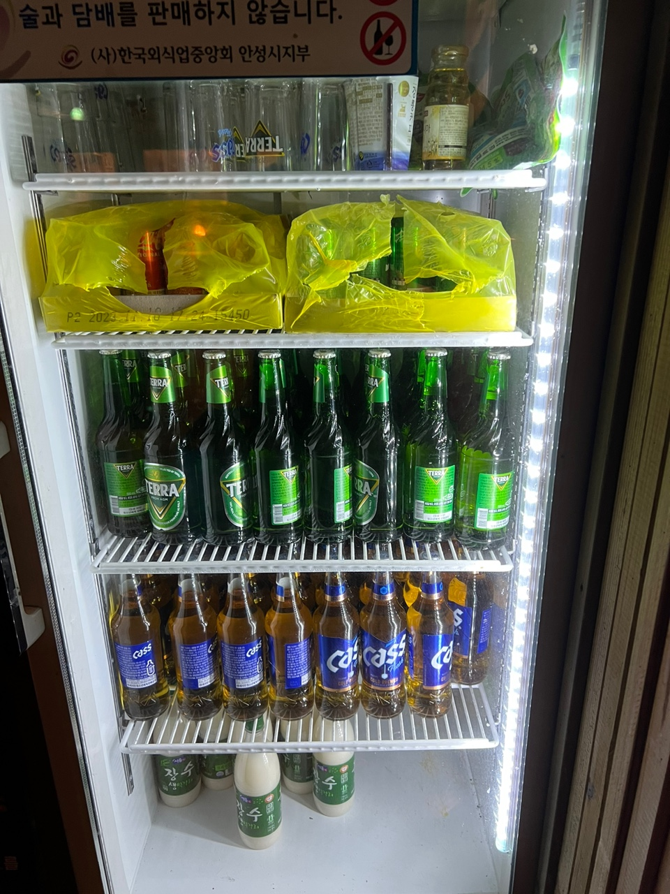
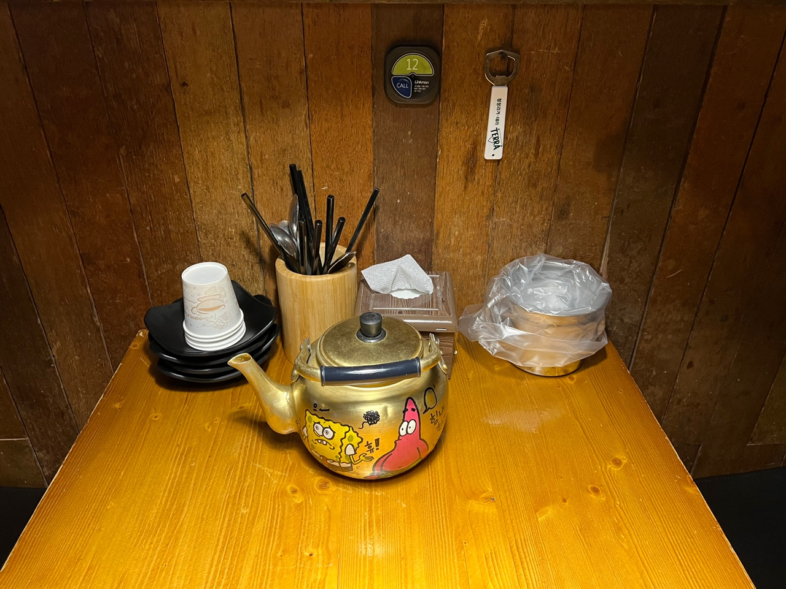

대동국수 직원
1.손님이 들어오면 '대동입니다!'라고 인사먼저 한 후 테이블안내를 해주세요.

2.메뉴판과 기본안주를 내주고 신분증검사를 합시다!

3.주문 받고 포스기에 찍고 술을 가져다 주세요.

4.무엇을 하고 있더라도 띵동소리 먼저 보고 대답해주세요! 대답이 안되면 보기만이라도!
5.결제하러 오시면 결제하고 테이블을 치웁니다.
6.마지막으로 수저와 컵, 그릇을 태이블 인원수만큼 세팅하고 물을 올려놓습니다.
